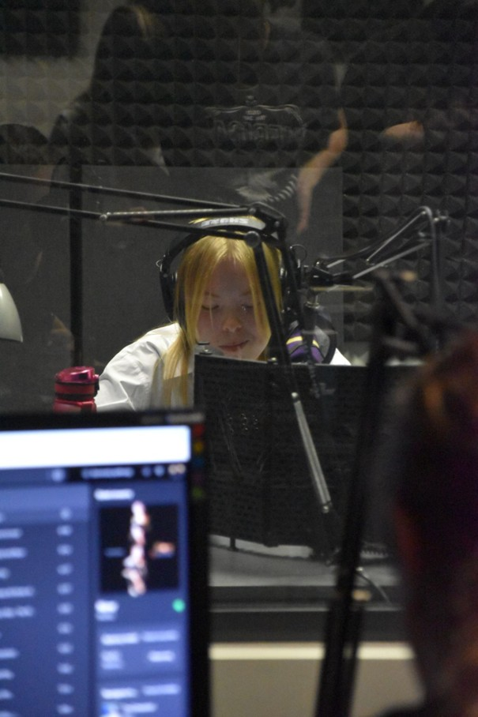
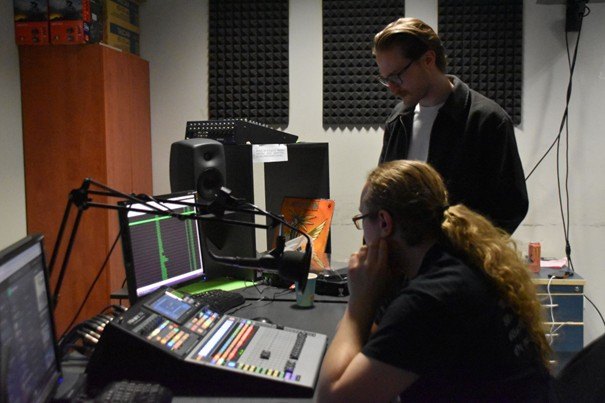
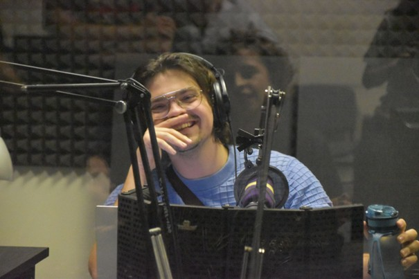

5 marca w budynku Instytutu Dziennikarstwa i Komunikacji Społecznej przy ul. Joliot-Curie odbył się pierwszy oficjalny dzień otwarty Uniradia. Z tej okazji przygotowaliśmy specjalną ramówkę, w której pojawiły się zarówno audycje sztandarowe takie jak Wzgórza Opowieści Wojtka Paszko czy Głos Azji Weroniki Kosobudzkiej, ale także przygotowane specjalnie na tę okazję – format Shuffle.
Nie zabrakło także powrotów. Na antenie gościliśmy chociażby Jasia Wątrobę czy Weronikę Bondaruk. Premierowo można też było posłuchać (Nie)dobre, bo polskie. Odwiedzić nas można było w godzinach 17:00-22:00.

Redaktorzy Uniradia obecni na miejscu przeprowadzali zainteresowanych przez proces działania naszego projektu, a także odpowiadali na wszystkie pytania związane zarówno z samą inicjatywą, jak i na te dotyczące już konkretnych pomysłów. Na przyszłych adeptów radia czekał także poczęstunek.

– Frekwencja przerosła nasze najśmielsze oczekiwania. Nie spodziewaliśmy się takiego odzewu – mówił redaktor naczelny Dawid Gruszka. – Dostajemy coraz więcej zgłoszeń. Co niezmiernie nas cieszy.
– Było super. Właśnie wypełniłem formularz – tak wizytę opisał jeden z zainteresowanych.
Dołącz do nas!
Rekrutacja dalej jest otwarta. Zainteresowanych zapraszamy do wypełnienia formularza znajdującego się pod poniższym linkiem. Oczekujących na odpowiedź prosimy o cierpliwość – odezwiemy się wkrótce.

Tekst: Zuzanna Biernacka
Zdjęcia: Anastazja Marek